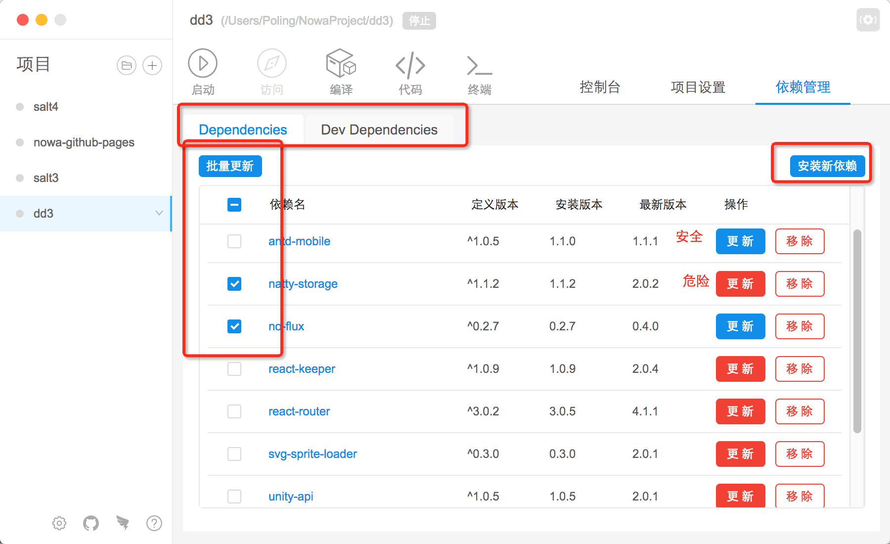

依赖管理

依赖管理根据 package.json 里面的依赖字段分为 'Dependencies' 和 'Dev Dependencies'。
字段声明
依赖以表格的形式呈现。
定义版本指的是package.json里的依赖版本定义安装版本指的是实际在node_modules文件夹里面的安装依赖版本最新版本指的是源地址上的最新版本
操作说明
1、更新
'更新' 操作分为 '安全更新'(蓝色) 和 '危险更新'(红色)。
安全更新指的是 'minor' 和 'patch' 位更新，更新之后不会影响组件使用危险更新指的是 'major' 位更新，更新之后可能影响组件使用
另外，如果有多个组件想要同时更新，可以选中选择框，然后点击 '批量更新'。
2、移除
'移除' 操作实际是执行 npm uninstall <packageName>, 会物理移除依赖，所以请谨慎使用。
3、新增
请点击 '安装新依赖' 按钮，工具会弹窗提示用户。输入依赖名字，确认即可安装。